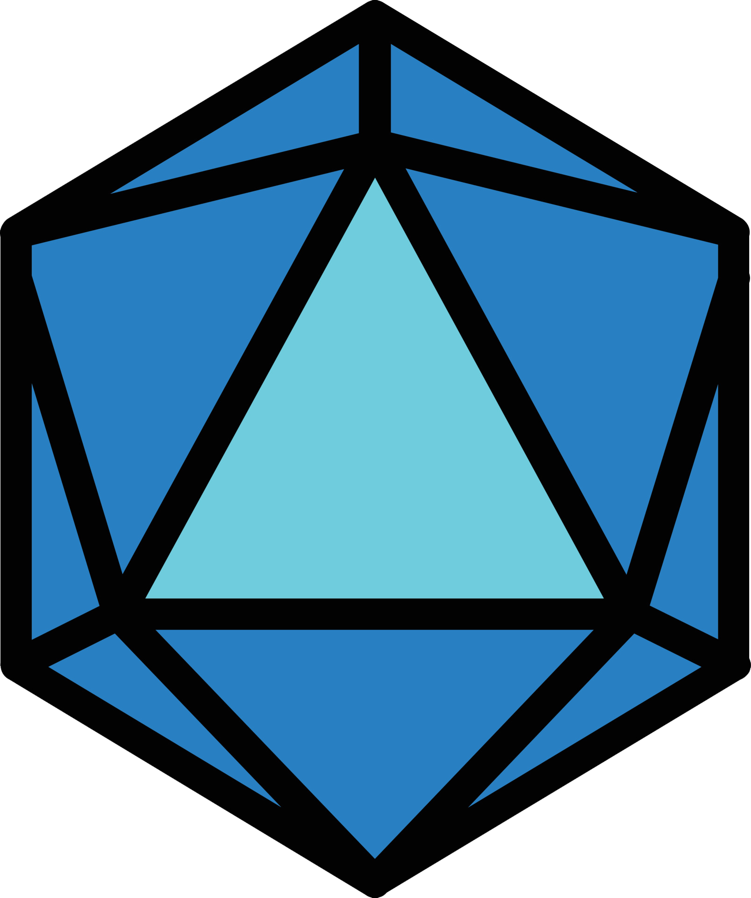

The Wonderful World of Dice
Dice have fascinated humans for over 5,000 years — from ancient Egyptian tombs to today's biggest tabletop RPGs like Dungeons & Dragons. The D20 (twenty-sided die) is the most iconic and is central to many role-playing games.
Whether you're a new player learning to roll for initiative or a seasoned Game Master collecting beautiful dice sets, this site is for you.
History & Cultural Significance
Dice were found in ancient Egyptian tombs dating back to 3000 BCE. The Romans used dice for gambling, and during the Middle Ages they were used in games and even for divination.
“Never tell me the odds!” — Han Solo
Popular Polyhedral Dice Types
| Die | Sides | Common Uses | Shape |
|---|---|---|---|
| d4 | 4 | Damage for small weapons | Tetrahedron |
| d6 | 6 | Most common die | Cube |
| d8 | 8 | Damage rolls | Octahedron |
| d10 | 10 | Percentile rolls | Decahedron |
| d12 | 12 | Damage for larger weapons | Dodecahedron |
| d20 | 20 | Attack & skill checks | Icosahedron |
Probability & Fun Facts
Did you know the most common roll on a D20 is 10 or 11? Understanding probability helps Game Masters design better encounters.